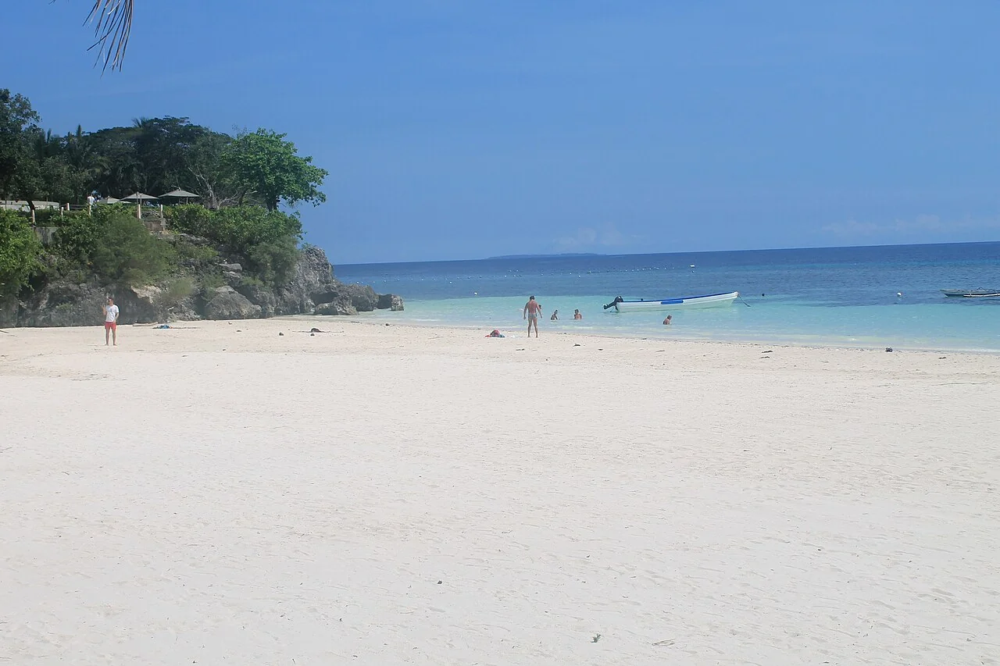

Alona Beach — Panglao
Bohol, Philippines · snorkeling, plongée, baignade

Plage de sable blanc d’environ un kilomètre, au sud-ouest de l’île de Panglao, entre des falaises rocheuses (Wikipédia). Le Routard en fait le cœur touristique de l’île, avec des restaurants et des centres de plongée. Wikipédia la place près d’un récif de corail, réputé pour le snorkeling et surtout la plongée : tortues, bancs de poissons et corail noir.
- Lieu
- Bohol, Philippines
- Niveau
- Variable selon les conditions
- Activités
- snorkeling, plongée, baignade
- Type d'eau
- Mer / océan
- Coordonnées
- 9.55, 123.77 (position approximative du secteur)
Dangers à connaître
- Le courant sous l’eau peut être assez fort par moments et rendre l’eau trouble (Wikipédia).
- Décembre peut amener un typhon : Rai (Odette) a frappé les Philippines en décembre 2021, avec le plus de morts à Bohol (Wikipédia).
- L’accès à la réserve marine est limité chaque jour (Wikipédia).
Le conseil d'Ocean Buddy
Tu peux explorer les fonds depuis la plage. Napaling Reef, sur Panglao, est connu pour son banc de sardines, même avec un simple équipement de snorkeling (Routard).
Ouvrir dans Ocean Buddy Télécharger sur l'App Store
Source : Fiche Ocean Buddy · décembre 2026 · d’après Wikipédia et le Routard · à vérifier localement.